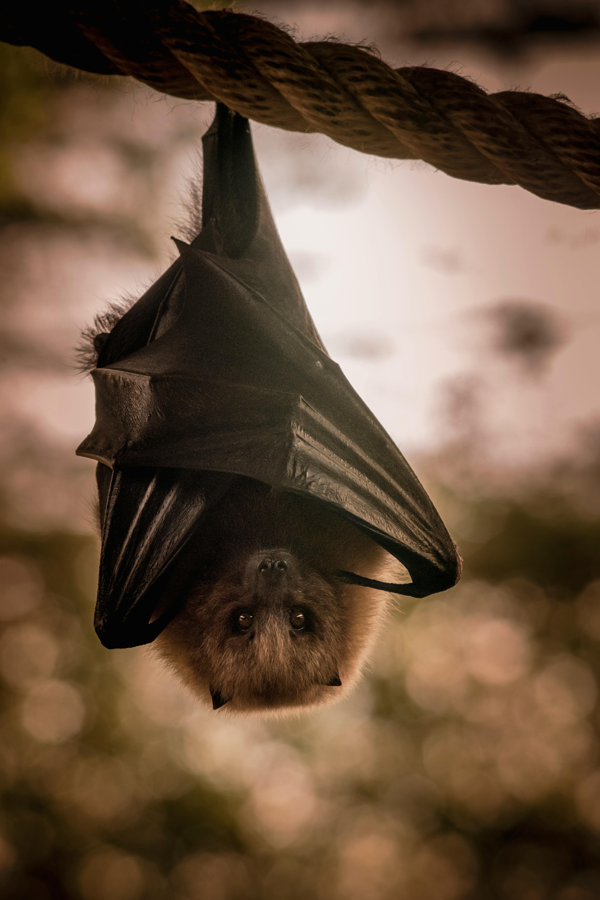

Bats!!!
Fun facts about Bats

Microbats and a few megabats emit ultrasonic sounds to produce echoes. The sound intensity of these echoes is dependent on subglottic pressure. The bats' cricothyroid muscle, located inside the larynx, controls the orientation pulse frequency, which is an important function. By comparing the outgoing pulse with the returning echoes, bats can learn about their environment and detect prey in darkness. Some bat calls can reach over 140 decibels. Microbats use their larynx to emit echolocation signals through the mouth or the nose. Bat call frequencies range from as low as 11 kHz to as high as 212 kHz. The noses of various groups of bats have fleshy extensions, known as nose-leaves, which play a role in sound transmission.

When not flying, bats hang upside down from their feet, a posture known as roosting. Most megabats roost with the head tucked towards the belly, whereas most microbats roost with the neck curled towards the back. This difference is due to the structure of the cervical or neck vertebrae in the two groups, which are clearly distinct. Tendons allow bats to hang from a roost with no effort, which is needed to release. Bats are more awkward when crawling on the ground, though a few species, such as the New Zealand lesser short-tailed bat (Mystacina tuberculata) and the common vampire bat (Desmodus rotundus), are quite agile. These species move their limbs one after the other, but vampire bats accelerate by bounding, the folded-up wings being used to propel them forward. Vampire bats likely evolved these gaits to stalk their hosts, while short-tailed bats took to the ground due to a lack of competition from other mammals. Terrestrial locomotion does not appear to affect their ability to fly.